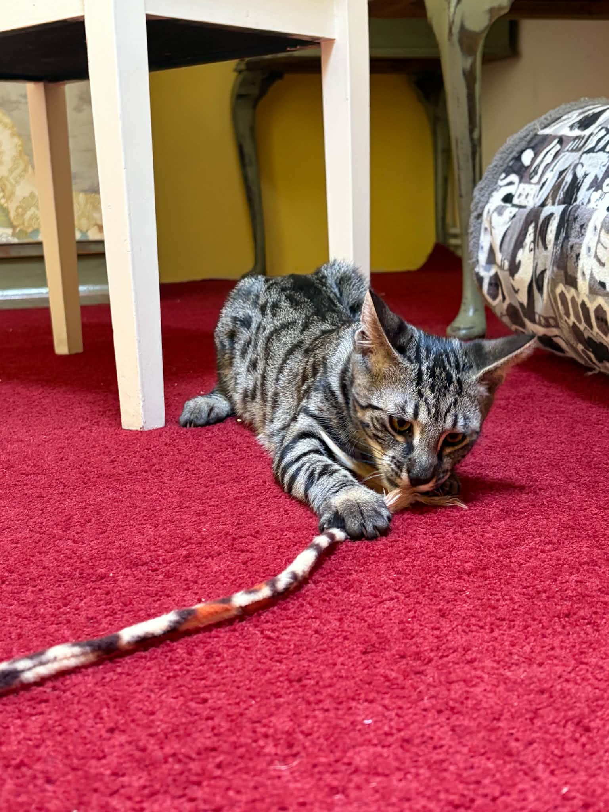
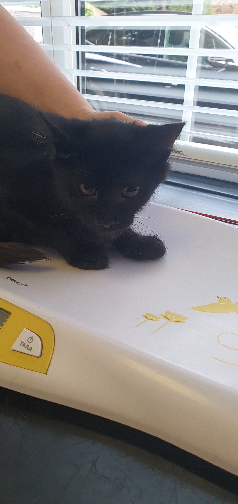
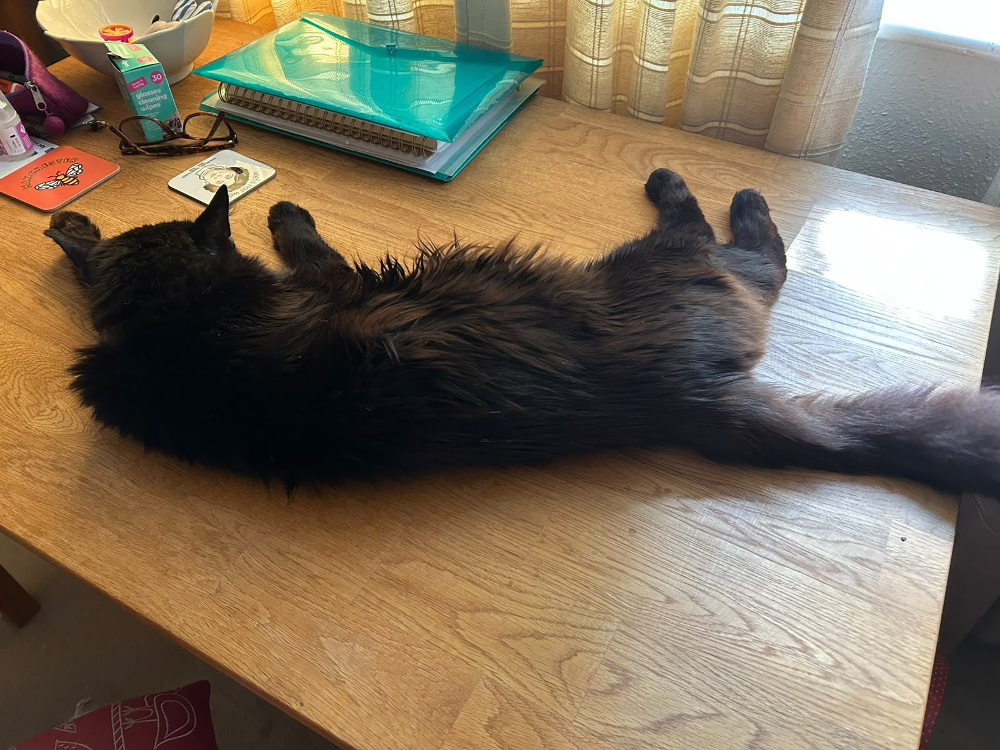
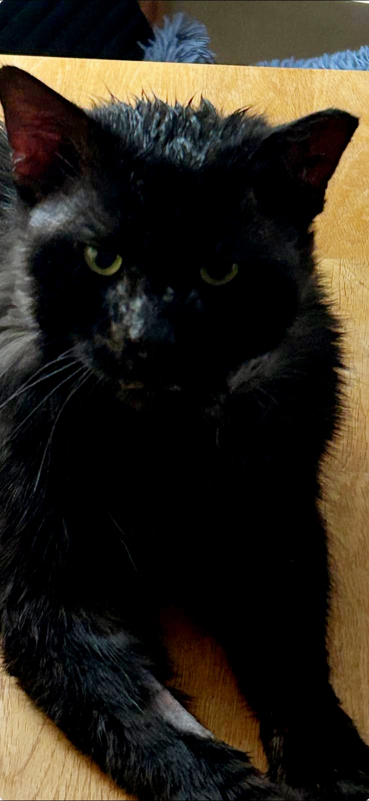
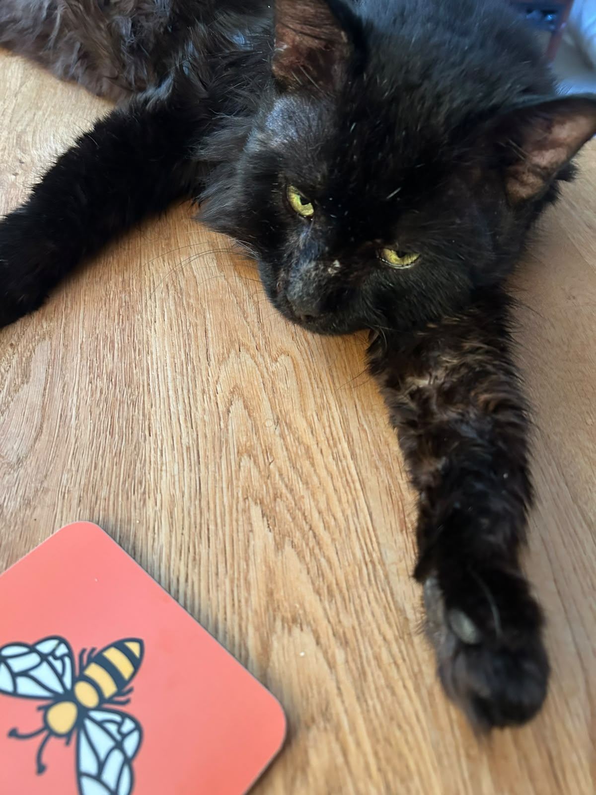
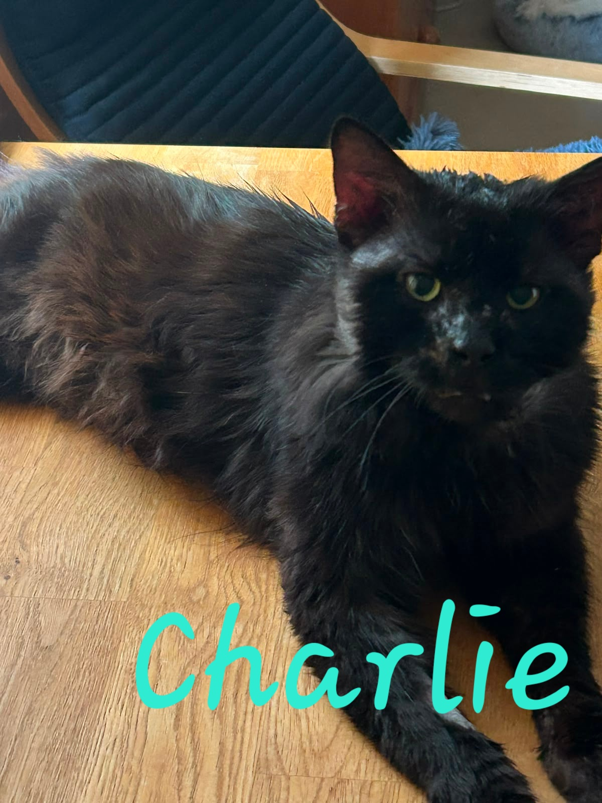

Simba & Leo
These two beautiful boys, who are around 10 months old come as a bonded pair. They are reliant upon each other, each gives the other a feeling of confidence and security.
We do not fully know their background, as we actually trapped them in a group of adjoined gardens where kind neighbours had been feeding them.
They are currently being looked after by a patient fosterer who has let them grow in confidence at their own pace. In the weeks they have lived there, they have come a long way towards trusting humans.
They have started to play and are good with the older children.
They will definitely need to be homed together as indoor cats, or in a home with a catio or a fully cat protected garden.
Both boys have good appetites, are neutered, microchipped, have received both flea and worm treatments and are fully vaccinated including FeLV.
If you would like to meet the boys, or have any questions please click the link below to complete the CAT ADOPTION FORM.
Please click here to complete the CAT ADOPTION FORM.Thank you.

Simba

Leo
Charlie
Charlie is a gentle giant of a cat around 7 years old, who despite obvious ill treatment in the past hasn't a bad bone in his body.
He loves his food and has a preference for dry food.
He is litter trained and very affectionate, plus he gives lots of head butts.
He is undemanding, but will let you know when his meals are due. He loves Dreamies and expects them in the morning and evening.
Charlie was in an awful state when we rescued him. Teenagers had been riding bikes at him. Since he has been in our care, he has been treated with the love, care and respect that every cat deserves.
He is now neutered, fully vaccinated including FeLV, microchipped and has been deflead and wormed. Yesterday he was given dental, full scale and polish and just one tooth removed. Although his teeth are now in a good healthy state, there is evidence of trauma in the past. This will not cause him any problems.
We are looking for an indoor home for Charlie, or a home with a cat proof garden or Catio. He is such a loveable boy, he would make an excellent companion cat, or would fit in with a family with older respectful children.
If you would like to meet Charlie, please complete and submit the Cat Adoption Form by clicking the link below.
Please click here to complete the CAT ADOPTION FORM.Thank you.




Charlie